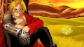
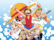
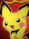

| 1 |
|
InuYasha, também conhecido como Inuyasha: Um Conto de Fadas Feudal, é uma série de mangá shōnen escrita e ilustrada por Rumiko Takahashi. Foi publicada na revista Weekly Shōnen Sunday entre 13 de novembro de 1996 e 18 de junho de 2008, totalizando 56 volumes tankōbon. |
7.9 |
Mais informações |
| 2 |
 |
Fullmetal Alchemist é um mangá shōnen escrito e ilustrado por Hiromu Arakawa. Foi serializado na revista mensal japonesa Monthly Shōnen Gangan entre agosto de 2001 e junho de 2010, com os seus 108 capítulos individuais compilados em 27 volumes em formato tankōbon e publicados pela editora. |
9.1 |
Mais informações |
| 3 |
 |
One Piece é uma série de mangá escrita e ilustrada por Eiichiro Oda. Os capítulos têm sido serializados na revista Weekly Shōnen Jump desde 22 de julho de 1997, com os capítulos compilados e publicados em 105 volumes tankōbon pela editora Shueisha até março de 2023. One Piece conta as aventuras de Monkey D. |
8.9 |
Mais informações |
| 4 |
 |
Bleach é uma série de mangá escrita e ilustrada pelo mangaká japonês Tite Kubo, que segue as aventuras de Ichigo Kurosaki que após ganhar os poderes de um Ceifeiro de Almas (shinigami), através da ceifeira Rukia Kuchiki, sendo então forçado a guiar as almas boas ao mundo pós-vida Soul Society, e a também derrotar os Hollows (monstros espirituais malignos) que tentam devorá-las. |
8.2 |
Mais informações |
| 5 |
 |
Pokémon é uma franquia de mídia que pertence a The Pokémon Company, tendo sido criada por Satoshi Tajiri em 1995. Ela é centrada em criaturas ficcionais chamadas "Pokémon", que os seres humanos capturam e os treinam para lutarem entre si com seus ataques de diversos tipos. |
7.5 |
Mais informações |